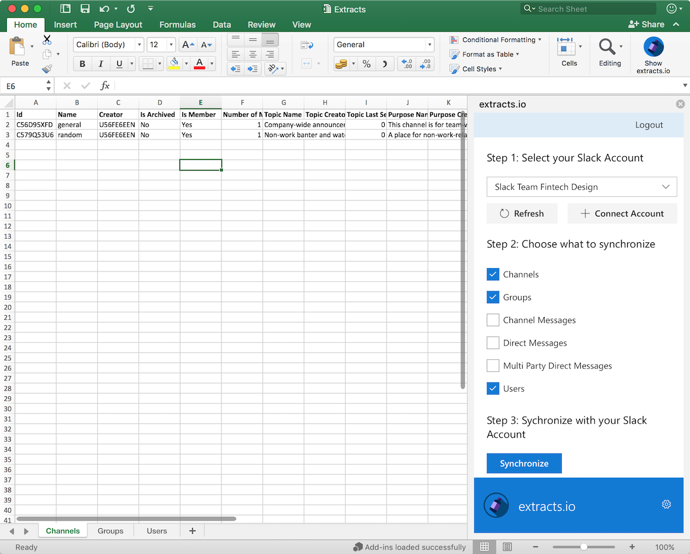

Automatically synchronize your data into Excel
Save time by integrating your data into Excel using an Extracts.io Addin.


Start and end in Excel
We're building our integrations directly into Excel. Choose which data sources you'd like to synchronize and work with them entirely in Excel.
Save time
Using an extracts.io Excel Addin means you spend less time copying and pasting. No more 'download as csv', just load up the Addin, select your data source and click synchronize.